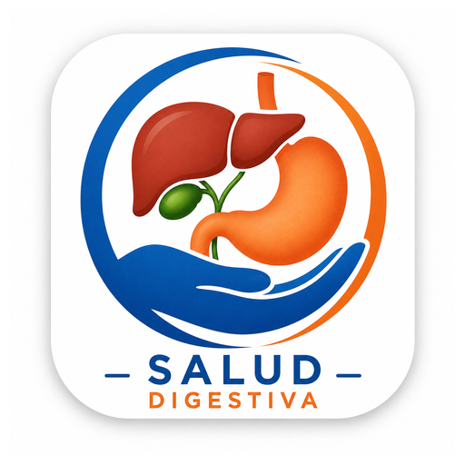

Salud Digestiva
Acceso rápido a nuestros medios de contacto
Abrir Salud DigestivaVerificando si su navegador permite agregar el acceso directo.

Acceso rápido a nuestros medios de contacto
Abrir Salud DigestivaVerificando si su navegador permite agregar el acceso directo.